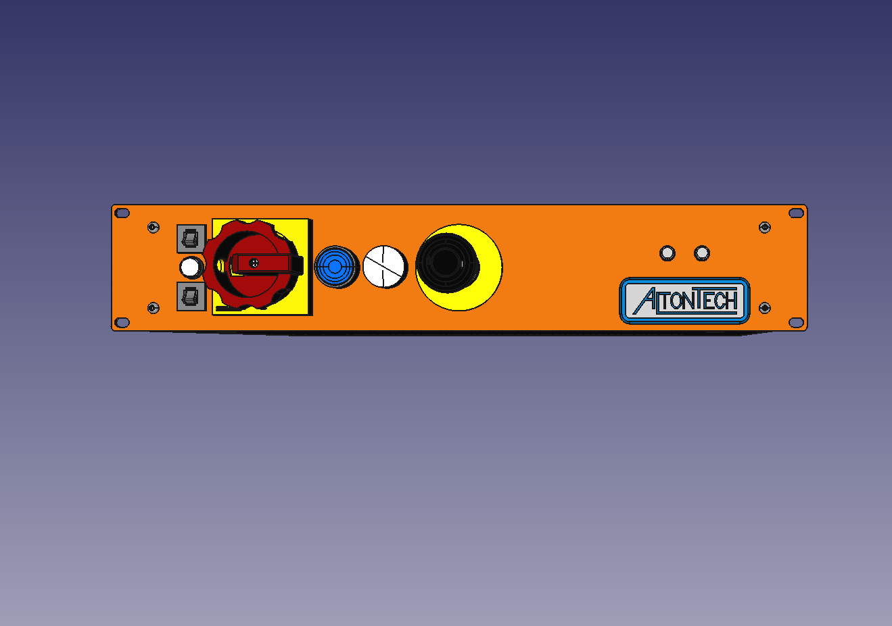

MALTMMI Man Machine Interface
- A 24V táp biztosítása 180W-ig
- Kapcsolható 230V-os hálózati csatlakozó.
- 5 ponton aktiválható vészkör biztonsági relékkel
- Izolált CAN busz állítható sebességgel
- Hűtés vezérlés és felügyelet
- One-Line rendszerű fényfüggöny támogatás
Last updated 2021.10.01
Kezelőszervek
- Hálózat meglétét jelző Mains jelzőfény.(zöld)
- Felhasználó által hozzáférhető biztosítékok.
- Hálózati főkapcsoló Main Switch, ami a 2db 230V-os aljaztok kivételével mindent kapcsol.
- Vészleállító kapcsoló
- A készülék bekapcsolását jelző fehér Power jelzőfény.
- Kék Arm nyomógombbal a készülék bekapcsolása történik.
- API-ból lekérdezhető Start nyomógomb.
- API-ból lekérdezhető "Cancel" nyomógomb.
Last updated 2021.10.12
Vészkör
A vészkör 5 ponton aktiválható, ezek:
- Doors Open - pl.: a gép egy olyan ajtója nincs zárva, ami veszélyes lehet. A normál működéshez rövidre kell zárni.
- Remote Emergency Stop: - pl.: A gép méreteiből adódóan az MMI-tól távolabb kell elhelyezni a vészleállító kapcsolót, akkor ez az: Remote Emergency Stop kapcsoló.
- Emergency Stop Front Switch - Az MMI előlapján található kapcsoló.
- Soft Emergency - Az MMI szoftvere vált ki vészállást pl.: a fényfüggönybe való benyúlás miatt.

Tápellátás
- A 24V-os tápellátásról egy 200W-os tápegység gondoskodik, amit a CAN busz csatlakozók felé 3 irányba kerül szétosztásra.
- A 24V-os CAN busz csatlakozók tápellátása egyenként API-ból kapcsolható, terhelhetősége: TBD
- A kapcsolható 230V-os aljzatok nincsenek biztosítva, nincsenek vészkörben, nem kapcsolható
- A kapcsolható 230V-os csatlakozó biztosítva van, benne van a vészkörben, fogyasztásmérővel van ellátva.
Interface
A számítógéppel a kapcsolatot alapvetően CAN-buszon tarja. A CAN busz sebessége konfigurálható, galvanikusan leválasztott.Az Ethernet csatlakozó kísérleti stádiumban van.
Hűtés
- Az MMI 24V-os belső tápegysége 2db ventilátorral van ellátva és egy belső hőmérsékelt figyelővel (PT100).
- Az MMI-hoz köthető 2db 24V-os ventilátor és 2db hőmérséklet mérő, amiket API-ból állíthatók, lekérdezhető
Fényfüggöny támogatása
Az MMI a Keyence One-Line System-re van felkészítve aminek a fogadására egy 5-pines M12-anya csatlakozó került a készülékre.
Keyence GLR fényfüggöny katalógus itt.
Hátlapi csatlakozók
Egyéb
- A fényfüggöny engedélyezésére dedikált safety relék kerültek a készülékbe (vészkörös ábrán látható)
- A firmware "eltévedését" hardveres watch-dog felügyeli. Ez is okozhat vészleállást.
- A készülék rendelkezik 2db digitális bementtel és 2db digitális kimenttel. M12-es csatlakozókon
Megjegyzések
- Digitális kimenetek
- Feliratok (STOP sárga felírat?)
- A csatlakozók ellenoldalainak típusai, a BOM-ban találhatóak meg
- Az MMI bekötésére egy mintát csinálni, ahol látszódnak a csatlakozók számozásai is
- Az AltonTech milyen One-Line fényfüggönyt használ?
- Zöld világító ARM nyomógomb és kék MAINS lámpa
Technikai dokumentációk
- Block diagramm: maltmmi_blockdiagram.pdf
- Block diagramm BOM: AltonTech MALTMMI BOM.xlsx
- Nyugalmi teljesítményfelvétel: TBD
- Maximális teljesítményfelvétel: TBD
- Ajánlott működtetési feszültség tartomány: TBD
Last updated 2022.03.02